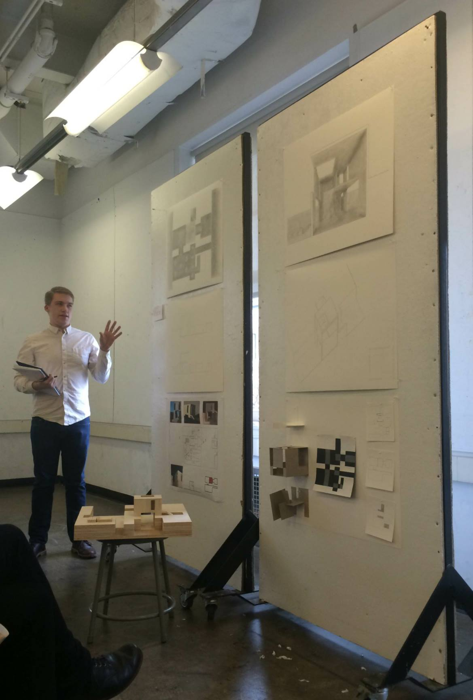

.jpg) HAFT
HAFT
HAFT
HAFT

Owen is a candidate for a Bachelor of Architecture in Carnegie Mellon University's School of Architecture. Owen lives in Princeton, NJ and has attended Princeton High School. In his youth he had a strong interest in 3D art, particularly working with wire, wood, and ceramics. During his senior year of high school he was allowed to create a installation for the school's performing arts center. Now he has shifted his interests to architecture, he has since interned for two years at an architecture firm.